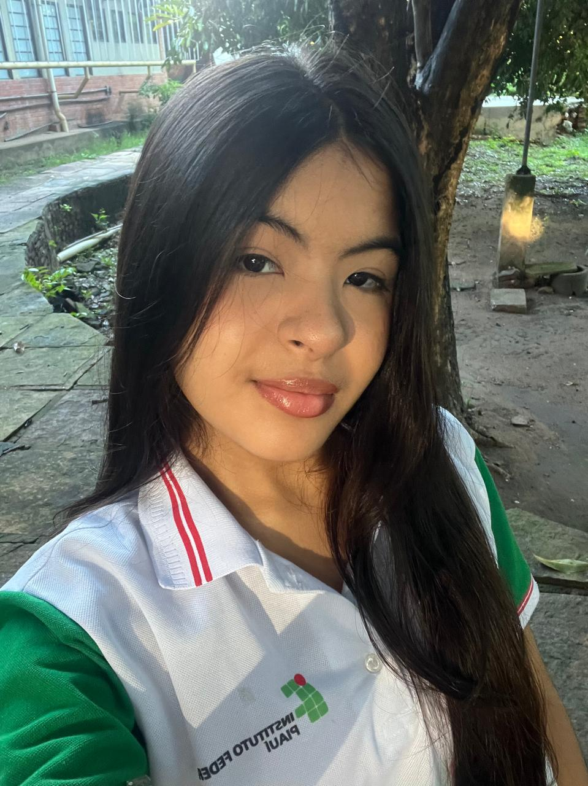
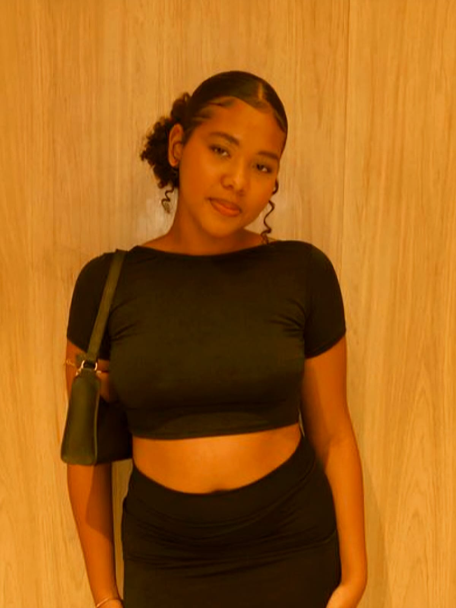

Uma seleção de filmes que amamos, acompanhada sobre um pouco de cada um deles
e os motivos pelos quais conquistam um lugar especial entre os nossos favoritos.
5 filmes favoritos da Lara

Olá! Me chamo Lara, tenho 16 anos, sou estudante do IFPI - Campus Zona Sul e agora vou
compartilhar cinco filmes que estão entre os meus favoritos.
Nome do filme 1

Ano de lançamento:00/00/0000
Duração:XX horas e XX minutos
Gênero:Gênero 1, Gênero 2
Sinopse
Escreva aqui a sinopse do filme.
Por que eu gosto desse filme?
Minha nota:⭐⭐⭐⭐⭐
Coloque sua opnião sobre o filme.
Nome do filme 2
Ano de lançamento:00/00/0000
Duração:XX horas e XX minutos
Gênero:Gênero 1, Gênero 2
Sinopse
Escreva aqui a sinopse do filme.
Por que eu gosto desse filme?
Minha nota:⭐⭐⭐⭐⭐
Coloque sua opnião sobre o filme.
Nome do filme 3
Ano de lançamento:00/00/0000
Duração:XX horas e XX minutos
Gênero:Gênero 1, Gênero 2
Sinopse
Escreva aqui a sinopse do filme.
Por que eu gosto desse filme?
Minha nota:⭐⭐⭐⭐⭐
Coloque sua opnião sobre o filme.
Nome do filme 4
Ano de lançamento:00/00/0000
Duração:XX horas e XX minutos
Gênero:Gênero 1, Gênero 2
Sinopse
Escreva aqui a sinopse do filme.
Por que eu gosto desse filme?
Minha nota:⭐⭐⭐⭐⭐
Coloque sua opnião sobre o filme.
Nome do filme 5
Ano de lançamento:00/00/0000
Duração:XX horas e XX minutos
Gênero:Gênero 1, Gênero 2
Sinopse
Escreva aqui a sinopse do filme.
Por que eu gosto desse filme?
Minha nota:⭐⭐⭐⭐⭐
Coloque sua opnião sobre o filme.
5 filmes favoritos da Geysla

Olá! Me chamo Geysla Hallana, tenho 16 anos, sou estudante do IFPI - Campus Zona Sul e agora vou
compartilhar cinco filmes que estão entre os meus favoritos.
Como Eu Era Antes de Você
Ano de lançamento:16/06/2016
Duração:1 hora e 50 minutos
Gênero:romance, drama
Sinopse
Em Como Eu Era Antes de Você, o rico e bem sucedido Will (Sam Claflin) leva uma vida
repleta de conquistas, viagens e esportes radicais até ser atingido por uma moto.
O acidente o torna tetraplégico, obrigando-o a permanecer em uma cadeira de rodas.
A situação o torna depressivo e extremamente cínico, para a preocupação de seus pais
(Janet McTeer e Charles Dance). É neste contexto que Louisa Clark (Emilia Clarke) é
contratada para cuidar de Will. De origem modesta, com dificuldades financeiras e
sem grandes aspirações na vida, ela faz o possível para melhorar o estado de
espírito de Will e, aos poucos, acaba se envolvendo com ele.Em Como Eu Era Antes de
Você, o rico e bem sucedido Will (Sam Claflin) leva uma vida repleta de conquistas,
viagens e esportes radicais até ser atingido por uma moto. O acidente o torna tetraplégico,
obrigando-o a permanecer em uma cadeira de rodas. A situação o torna depressivo e
extremamente cínico, para a preocupação de seus pais (Janet McTeer e Charles Dance).
É neste contexto que Louisa Clark (Emilia Clarke) é contratada para cuidar de Will.
De origem modesta, com dificuldades financeiras e sem grandes aspirações na vida, ela
faz o possível para melhorar o estado de espírito de Will e, aos poucos, acaba se envolvendo
com ele.
Por que eu gosto desse filme?
Como eu era antes de vc : nos ensina que amor verdadeiro não é suficiente
para mudar ou salvar o outro, mas tem o poder de transformar a nossa própria
perspectiva de vida e expandir nossos horizontes. Por isso é um dos meus filmes favoritos.
Diário de Uma Paixão
Ano de lançamento:25/06/2004
Duração:2 horas e 3 minutos
Gênero:romance, drama
Sinopse
Em uma clínica de repouso, um idoso lê diariamente
o diário de uma história de amor para uma mulher com
perda de memória, tentando ajudá-la a recordar o
próprio passado.O caderno narra o romance de Noah e
Allie, dois jovens de realidades muito diferentes que
vivem uma paixão avassaladora na década de 1940.
Apesar de separados pelo preconceito da família dela
e pelos caminhos da vida, o sentimento entre eles
resiste ao tempo e às adversidades, conectando o
passado e o presente de forma emocionante.
Por que eu gosto desse filme?
Dirio de uma paixão: nos mostra um amor que começa muito
cedo e intenso , um amor onde os dois se amavam diariamente,
intensamente , independente das brigas q tinham no final eles
sempre se escolhiam no final. Mas devido as condições de de
Noah nn eram mt boas entt esse amor foi empedido pelos pais
de Allie . Noah e Allie nos ensina que independentemente to
tempo quando o amor e verdadeiro ele nunca vai embora por mais
que o tempo passe ou que venha barreiras , quando o amor é
verdadeiro ele sempre vence , o filme mostra isso quando
Noah escreve 365 carta para Allie todos os dias durante um ano
com esperanças que ela voltasse , ou quando a Allie abandonou
seu noivado e tudo o tinha para voltar com Noah mesmo depois
de tudo e de tanto tempo, . E no final ele morreram juntos ,
nunca se deixaram ou largaram a mão do outro devido as dificuldades,
então por isso esse filme é um dos meus favoritos
Continência ao Amor
Ano de lançamento:29/07/2022
Duração:2 horas e 2 minutos
Gênero:Gênero 1, Gênero 2
Sinopse
Para conseguir assistência médica e pagar suas dívidas, uma jovem musicista e
um fuzileiro naval decidem fazer um casamento de conveniência pouco antes de ele
ser enviado para a guerra.O acordo une Cassie e Luke, duas pessoas com visões de
mundo totalmente opostas que mal se suportam. No entanto, quando uma tragédia
inesperada acontece no fronte de batalha, eles são forçados a conviver de verdade,
fazendo com que a linha entre o relacionamento de fachada e os sentimentos reais
comece a se confundir.
Por que eu gosto desse filme?
A trama acompanha Cassie (uma cantora liberal e cética
com diabetes tipo 1) e Luke (um militar conservador com um passado difícil).
Eles se unem em um casamento de conveniência por benefícios financeiros: ela
precisa pagar por seus remédios caros e ele precisa quitar dívidas antigas.
Com isso eles acabam tendo uma convivência pois tem que mostrar que são realmente
um casal , acabam se conhecendo melhor e se apaixonando , mesmo sem querer e depois
de terem sido descobertos que mentiram , eles decidem ficar juntos .
A Culpa É das Estrelas
Ano de lançamento:05/06/2014
Duração:2 horas e 6 minutos
Gênero:romance, drama
Sinopse
Hazel Grace Lancaster e Augustus Waters são dois adolescentes que se conhecem
em um grupo de apoio para pacientes com câncer. Por causa da doença, Hazel sempre
descartou a ideia de se envolver amorosamente, mas acaba cedendo ao se apaixonar
por Augustus. Juntos, eles viajam para Amsterdã, onde embarcam em uma jornada inesquecível.
Por que eu gosto desse filme?
A culpa é das estrelas:O filme A Culpa é das Estrelas conta a história de Hazel
Grace e Augustus Waters, dois jovens que se apaixonam em um grupo de apoio para
pessoas com câncer.A principal lição da história é que devemos aproveitar cada
momento da vida, pois o tempo que temos é precioso, não importa se ele é longo ou curto.
Crepúsculo
Ano de lançamento:21/11/2008
Duração:2 horas e 1 minutos
Gênero:romance, fantasia
Sinopse
A estudante Bella Swan conhece Edward Cullen, um belo, mas misterioso adolescente.
Edward é um vampiro, cuja família não bebe sangue, e Bella, longe de ficar assustada,
se envolve em um romance perigoso com sua alma gêmea imortal.
Por que eu gosto desse filme?
O primeiro capítulo da famosa saga de romance e fantasia que acompanha a história
de Bella Swan, uma adolescente comum que se muda para a chuvosa cidade de Forks para
morar com o pai. Na nova escola, ela conhece Edward Cullen, um jovem misterioso e
fascinante que, na verdade, é um vampiro imortal. Apesar do perigo iminente e do
instinto biológico de Edward de querer o sangue de Bella, os dois se apaixonam
intensamente. A trama se complica quando um clã de vampiros nômades e hostis chega
à região, e um deles, James, decide caçar Bella por esporte, forçando Edward e sua
família a lutarem para protegê-la.A principal moral de "Crepúsculo" gira em torno do
poder de escolha e do autocontrole sobre a nossa própria natureza.